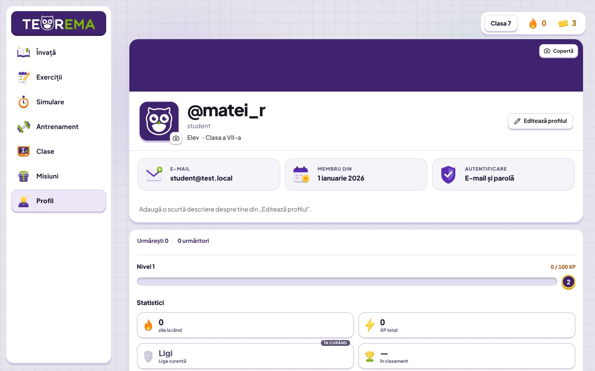
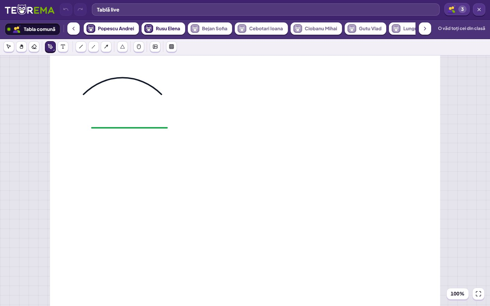
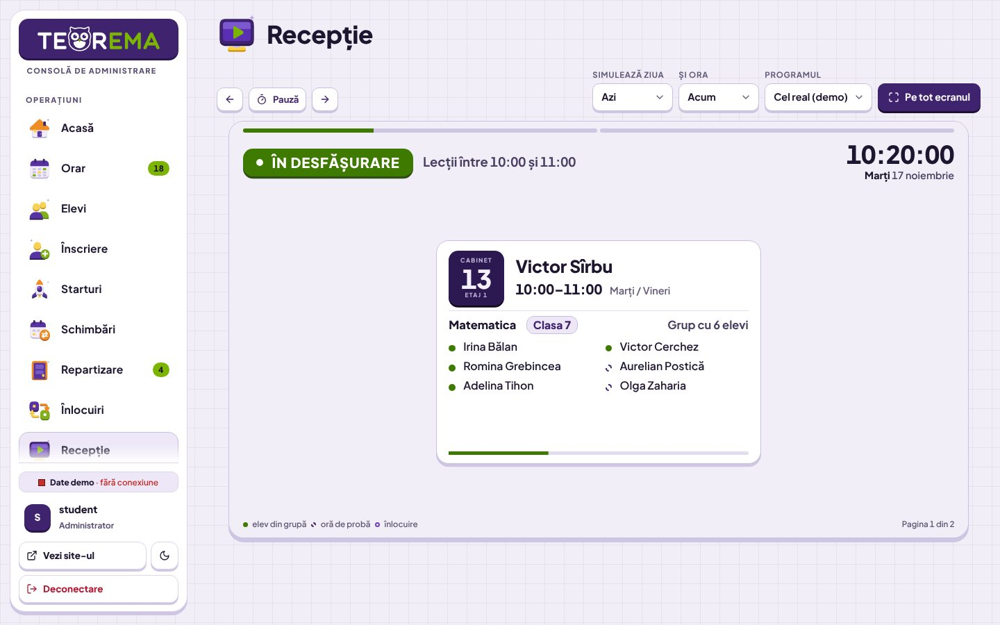

Ședința echipei
Cum funcționează platforma
De la lecțiile elevului până la registrele profesorilor: toate procesele, pe scurt.
Pe scurt
Trei lucruri într-o singură platformă

Pentru elevi
Lecții scurte, banca de exerciții, antrenament și simulări pentru BAC și Evaluarea Națională.

Pentru profesori
Clasele, temele, simulările, catalogul și tabla live. Registrul rămâne în Google Sheets.

Pentru manageri
Consola: orar, înscrieri, cabinete, transferuri, înlocuiri și starturi de grupe.
Roluri
Fiecare vede doar ce îi trebuie

Elev
- Învață, Exerciții, Antrenament, Simulare
- Clasele lui și lecția următoare
- Misiuni, serie, realizări
Profesor
- Clasele din registru
- Teme, simulări, catalog, tablă
- Adaugă exerciții
- Botul din Telegram

Manager
- Consola: Orar, Elevi, Înscriere
- Starturi, Schimbări, Înlocuiri
- Disponibilitate, Profil

Administrator
- Toată consola
- Repartizare pe cabinete
- Conturi, Sincronizare, Info
Profesorii și managerii se înscriu singuri și îi aprobă administratorul, care le dă numele oficial.Platforma pentru elevi
Șapte taburi, fiecare cu rolul lui
Învață
Lecții scurte pe capitole, ca un joc.

Exerciții
Banca de exerciții și colecțiile tale.

Simulare
BAC și Evaluare Națională, ca la examen.

Antrenament
Sesiuni de exerciții alese de elev.
Clase
Clasele, temele, lecția următoare.
Misiuni
Ținte zilnice cu XP.

Profil
Nivel, serie, realizări, simulări.
Bufnița te ghidează
Peste tot, cu stări diferite.
Învață
Lecții scurte, pas cu pas
Un drum de cerculețe, ca într-un joc. Elevul vede mereu ce urmează.

Exerciții
Banca de exerciții
Exerciții pe capitole, cu soluție și barem. Acum pentru clasa a 12-a.


Antrenament
Un antrenament făcut pe măsura elevului
Un ghid pas cu pas: Felul, Tipuri, Câte, Cum, Gata.


Simulare
Examenul, repetat acasă
Simulare BAC sau Evaluare Națională, cu nota la final.

Motivație
Ce îl face pe elev să revină zilnic



În clasă
Tot ce ține de o grupă, într-un loc


Tabla live
O tablă comună și una pentru fiecare elev


Partea a doua
Consola de administrare
Ce fac managerii și administratorii: grupe, elevi, bani, cabinete.
Cum se leagă totul
Registrul din Google Sheets conduce
Registrul profesorului
Un registru pe profesor, o filă pe grupă. Aici stau prezența, notele, banii și formulele.
 Platforma
Platforma
Consola, clasele, catalogul, botul din Telegram. Vede registrul aproape imediat.
Scrie platforma, în registru
- Elevul nou: nume, telefon, manager, statut
- Plăți și reduceri
- Transferuri și înlocuiri
- Starea și orarul grupei, disponibilitatea
Scrie doar profesorul
- Prezența și notele
- Tema lecției și data
- Formulele de calcul ale banilor
Orar
Toate grupele, într-o listă


Înscriere
Un elev nou, în patru pași

Repartizare
Cabinetele și profesorii, pe tablă

Alerte pentru manageri
Starturi, Schimbări, Recepție


Telegram
Un asistent pentru profesori
Profesorul își conectează Telegram din profil, cu un cod. Apoi întreabă botul.
18:00 Matematică, Grupa 5
Offline, cab. 14 · 3 din 6 elevi
20:00 Algebră, Grupa 7
Online · 4 din 6 elevi
Grupa 9 a ajuns la 3 elevi înscriși.
Exemplu
Siguranța datelor
Nimic nu se scrie pe nevăzute
 Pagina Sincronizare arată fiecare registru, ultima citire și erorile de corectat în registru.
Pagina Sincronizare arată fiecare registru, ultima citire și erorile de corectat în registru.